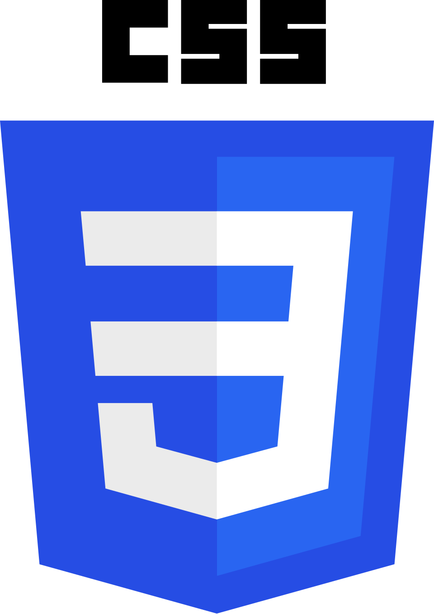
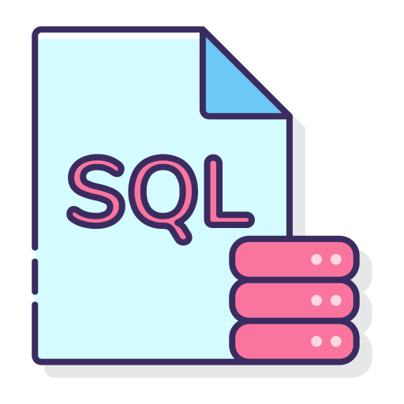

> Player_Profil_
- Nom
- Mathis Beaussier
- Classe
- Développeur web junior
- Niveau
- 20 ans
- Formation
- BUT MMI parcours Développement, IUT de Blois
- Mission
- Construire des sites web solides, de la base de données jusqu'à l'interface.
- Statut
- En quête d'un stage du 12 avril au 25 juin 2027
> Mes_projets_
Mes projets les plus aboutis d'abord. Chaque carte ouvre sa fiche détaillée.

Projet universitaire
viZion
Site vitrine WordPress d'une maison d'optique fictive (projet universitaire) : collections, histoire, prise de rendez-vous.

En ligne
PiVert faunes & flores
Site e-commerce de plantes et d'animaux, fait en binôme. J'ai développé toute la partie technique : panier, comptes, administration.

Jouables ici
Wordle et Memory
Deux jeux en JavaScript natif, jouables au clavier, à la souris et au doigt.
> Mes_compétences_
Ce que je sais faire, et où je l'ai fait :
-


HTML5 / CSS3Intégration du site viZion et de ce portfolio, adaptés au mobile.
-
 JavaScript
JavaScriptWordle avec dictionnaire JSON, Memory à deux joueurs, effets de ce portfolio.
-
PHP
PiVert : structure du site, panier, comptes et administration.
-

SQL / MySQLBase de données relationnelle de PiVert (produits, clients, commandes).
-
WordPress
Site vitrine de viZion, maison d'optique fictive (projet universitaire).
-
Figma, Illustrator, InDesign
Lecture et intégration de maquettes, identité visuelle de Pasta Tadaaa!.
-
Bootstrap
Mises en page responsive.
-
Git, GitHub, AlwaysData
Versionnement et mise en ligne de mes projets.
En apprentissage : Laravel, React, Tailwind CSS
> Parcours_
-
Prochaine quête : stage 2027
12 avril – 25 juin 2027, 11 semaines
Stage de développement web : Orléans, Blois, Tours, Paris · ouvert à la Suède.
-
BUT MMI, parcours Développement
2025 – 2027, IUT de Blois
Réorientation vers le multimédia pour allier code et création numérique.
-
BUT Informatique
2024 – 2025, Orléans
Bases solides en informatique et en développement web.
-
Bac STI2D, option SIN
2023 – 2024
Premières bases en systèmes d'information et numérique.
> Contact_
Un stage, une question, un projet ? Écris-moi :